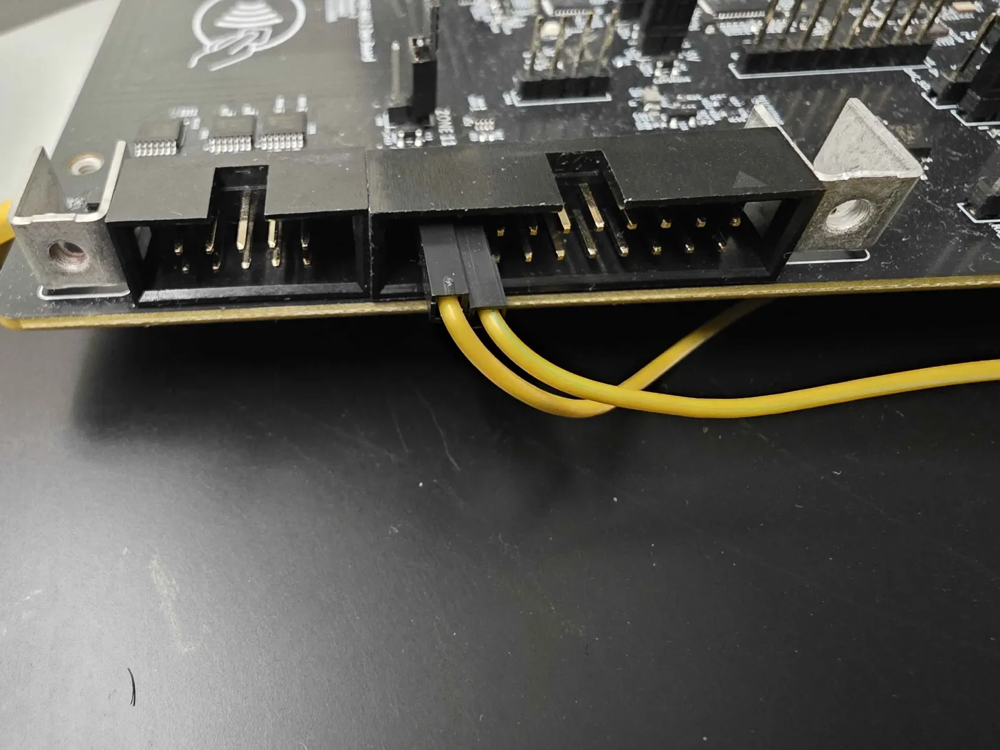

Analog I/O, 0–5 V
An op-amp front end lifts the RP2350’s native 3.3 V ADC range all the way to 0–5 V, giving four analog inputs that can directly interface with real-world sensors and signals without external level-shifting circuitry. The same inputs feed a programmable-gain amplifier (PGA) so that small differential signals — read from combinations of inputs — can be captured at up to 1 kHz, making low-level measurements practical in the field.
Two analog outputs mirror the input range, also spanning 0–5 V with a 25 kHz update rate — fast enough for signal synthesis, DAC-driven control loops, and stimulus generation in analog test scenarios. The IO-voltage pin doubles as an analog trigger input, routed through the same analog front end and a window comparator, so external events can arm captures or fire interrupts without CPU polling.

Key facts
- Inputs
- 4× 0–5 V
- Outputs
- 2× 0–5 V @ 25 kHz
- PGA
- low differential @ 1 kHz
- Trigger
- window comparator